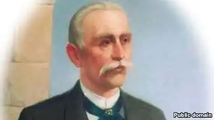

Ісмаїл Гаспринський — видатний кримськотатарський просвітник
Анексія Криму особливо болісно позначилася на кримськотатарському народі. Хід його облаштування на батьківській землі та інтеграції в українське суспільство був брутально перекреслений окупаційною владою, яка із завзяттям почала боротися проти відродження його історичної пам'яті. Одним із найяскравіших прикладів цього стала заборона на проведення в Сімферополі меморіальних урочистостей до 70-ліття його депортації. Утім, історія свідчить, що за таких умов готовність людей до відстоювання власної національної гідності та прав лише підноситься. Зростає й інтерес до видатних співвітчизників, особливо тих, які зробили значний внесок у справу утвердження національної самосвідомості. Однією з таких особистостей є для кримських татар видатний просвітник Ісмаїл Гаспринський, столітні роковини від дня смерті якого відзначатимуться на початку вересня цього року.
Ім'я Ісмаїла-бея Мустафи-оглу Гаспринського (8.03.1851–11.09.1914) стало для кримськотатарського народу символом відродження тюркізму, знаменом перемін, відмовлення від старих догм і стереотипів. І. Гаспринський був одним із найвідоміших педагогів-реформаторів кінця XIX – початку ХХ ст. Вплив його ідей позначився при підготовці і проведенні реформи національної школи, розробці проблем рідної школи, створенні перших національних підручників. Зачинатель справи просвіти кримськотатарського народу і її лідер, І. Гаспринський присвятив життя справі єднання традиційної духовності з передовими досягненнями європейської культури, чим здобув заслужений авторитет серед усіх ісламських народів Російської імперії та Близького й Середнього Сходу. Кінець 1860-х рр. був часом, коли після низки поразок, яких зазнали народи Сходу від європейських колонізаторів, у мусульманському світі почала вкорінюватися думка про важливість освіти, необхідність оновлення громадського й духовного життя. В суспільстві прокидалося почуття національної гідності, поширювалися ідеї розгортання широкої антиколоніальної боротьби. Такі настрої сприяли появі лідерів нового типу, які, володіючи знаннями Заходу, залишалися вірними традиціям свого народу. Одним із таких провідників був І. Гаспринський, у якого відданість культурі, мові й релігії свого народу органічно поєднувалася з прагненням освоїти все багатство європейської і російської культури. Задля розширення культурного кругозору в 1871 р. Ісмаїл вирушає до Парижа, де відбулося напередодні повстання комунарів і який потроху починав відходити від поразки у франко-прусській війні. Незважаючи ні на що, місто зберігало статус культурної столиці Європи. Крім того, Париж, у якому часто і на тривалий час оселялися мусульманські просвітники з країн Середземномор'я, в останній третині XIX ст. перетворювався на своєрідне місце зустрічі культур Заходу і Сходу. Все це робило його ще привабливішим для І. Гаспринського. Поїздка до столиці Франції дала змогу молодому кримськотатарському інтелектуалу не тільки ознайомитися з новітніми досягненнями західної цивілізації, а й усвідомити світовий масштаб мусульманського просвітницького руху, який відбувався в контексті синтезу східної духовності із західними науково-технічними та культурними досягненнями. Тоді ж Гаспринський зрозумів, що центром мусульманського відродження того часу став Єгипет, рівень економіки й освіти в якому істотно підвищився завдяки реформам правителя Мохаммеда Алі. Тому кілька місяців у 1874–1875 рр. І. Гаспринський проводить у Каїрі. Досвід, набутий під час французької та єгипетської мандрівок, багато в чому визначив ціннісні пріоритети й подальший життєвий шлях Ісмаїла Гаспринського. Враження від поїздок лягли в основу низки його літературних творів. Ісмаїл утвердився в глибокій вірі, для якої були чужими демонстративність і вузький клерикалізм. Саме після мандрів Європою у нього стала визрівати думка про необхідність радикальних реформ духовного життя мусульман, які базувалися б на поєднанні науково-технічного прогресу християнських і збереженні оновлених релігійних принципів ісламських народів. Ці ідеї І.Гаспринський почав реалізовувати передусім при розробленні та запровадженні нової системи шкільної освіти – спочатку для мусульман Криму, а згодом й інших регіонів Російської імперії. Нова система освіти передбачала ознайомлення школярів з основами російської та європейської культур, прищеплювала їм навички толерантності й віротерпимості, знання й поваги до науки. Ісмаїл Гаспринський як мусульманин і патріот свого народу стояв біля джерел і був безпосереднім учасником загальноісламського й загальнотюркського рухів, що зароджувалися в Російській імперії наприкінці XIX ст. Однак його світогляд був істотно ширшим, ніж у більшості конфесійно й етнічно обмежених учасників цих рухів. Він уникав будь-яких форм націоналізму і клерикалізму і вважав, що піднесення культурного рівня народу має базуватися на відновленні його традиційної духовності через посередництво просвітництва серед широких мас населення. Традиції мають бути обов'язково збереженими, тим більше що, як вважав Гаспринський, не все варто переймати в Європи – важливий саме синтез національної культури і передових досягнень західної цивілізації. Відмова ж від свого коріння стане згубною. Суперечності між Заходом і Сходом І. Гаспринський прагнув зняти, поєднуючи західну вченість і цивілізованість зі східною духовністю, ґрунтованою на ісламі. Він писав: "Могутній, кипучий Захід з його мільярдами і широкими знаннями, язичницький Схід, що пробуджується, з його незліченним населенням можуть здавити нас, мов лещата, якщо ми не поквапимося як слід згуртуватися, просвітитися і розвинути на всю широчінь працездатність і продуктивність". Молодий Ісмаїл брав активну участь у громадському житті рідного міста. Після повернення з Єгипту його було обрано гласним Бахчисарайської міської думи, а в 1876 – міським головою Бахчисарая. Цю посаду він обіймав до 1884 р. і провів кілька масштабних реформ. Йому вдалося майже втричі збільшити бюджет міста й розпочати суттєві перетворення в міському господарстві. Залишаючись у межах чинної юридичної бази, він добився від Міністерства внутрішніх справ Російської імперії підвищення квоти представництва кримських татар у органах міського самоврядування, яке було обмежено законами. Піклувався він і про санітарний стан та розвиток народної освіти у Бахчисараї тощо. Розуміючи, що основи світогляду закладаються в дитинстві, Ісмаїл пише і за власною редакцією видає кримськотатарською мовою численні підручники і книги, розраховані на молодих читачів. Видання Гаспринського були співзвучними часу і отримали широку популярність у суспільстві. Зокрема, його навчальний посібник "Ходжа-і-суб'ян" ("Учитель дітей") був неодноразово перевиданий і став найпопулярнішим виданням у тюркомовному світі. Питання впровадження знаменитого звукового методу, створення новометодних (світських) шкіл стали центральними у виданні Учителя вчителів, що постійно запевняв своїх читачів у тім, що Коран і освіта "не заважають одне одному, як думають багато мусульман, а навпаки". Переконувати в цьому Гаспринському доводилося не тільки своїх одновірців, але і "поважних учених", які вважали, що "преса в руках неосвіченого татарського духівництва служила і продовжує бути знаряддям підтримки і поширення релігійного, морального і побутового обскурантизму в бідному татарському простолюдді". Письменницький талант І. Гаспринського, що найповніше розкрився в останній чверті XIX ст., зробив його патріархом нової кримськотатарської літератури. Його перу належать повість "Африканські листи", написаний в епістолярному жанрі роман "Листи Молли Аббаса Франсові", історичне оповідання "Дівчина-левиця", містична новела "Лихо Сходу", "Французькі листи", "Сонце зійшло" та інші художні твори. Пізніше Гаспринський розкривається в жанрі політичної есеїстики – на початку XX ст. його нариси й есе були видані двома збірками – "Російське мусульманство" та "Російсько-східна угода". В цілому творча спадщина просвітника налічує десятки літературних творів і тисячі публіцистичних праць. Активно займався І. Гаспринський і науковою працею, зокрема у сферах історії, етнографії та писемної культури свого народу. У 1887 р. він входить до науково-краєзнавчої організації Криму – Таврійської губернської наукової архівної комісії, в якій виконав значну роботу з пошуку й вивчення літературних пам'яток середньовічного мусульманського Криму. Проте основні свої зусилля Ісмаїл упродовж усього життя спрямовував на випуск періодичних видань кримськотатарською мовою. У 1883 р. І. Гаспринський у Бахчисараї організовує і редагує видання двомовної (кримськотатарською та російською) газети "Терджиман-Перекладач". Вона була першою і протягом багатьох років залишалася єдиною тюркомовною газетою в межах Російської імперії. Проіснувала газета 35 років і регулярно виходила до квітня 1918-го. Уже з перших номерів "Терджиман" користувався великим попитом. Матеріали газети були присвячені проблемам мусульман Криму і всієї імперії, подіям загальноросійського і світового політичного та культурного життя. Ця газета стала "вікном у великий світ" для кримських татар та інших тюркомовних народів імперії в Поволжі, Закавказзі та Середній Азії. Вона поширювалася в Туреччині й навіть підвладному Китаю Східному Туркестані. Матеріалами газети активно користувалася турецька преса. "Терджиман" відкривав світ культури новому поколінню кримських татар, спраглих інтелектуальної освіти й творчості. Газета стала відправною точкою літературного шляху таких відомих у першій третині XX ст. (які згодом влада намагалася штучно викреслити з людської пам'яті) літераторів, як Осман Аргокракалі, Мемет Нузет, Якуп Шакір-Алі, Шаміль Тохторгазі, Обіякім Ільмай, Асан Сабрі Айвазов, Ісмаїл Лятіфзаде, Сеїт Абдулла Озенбашлі. Гаспринський був терпимим до ідейних супротивників із усіх таборів. Будучи в духовному плані значно вищим за більшість своїх співвітчизників, просвітник до певної межі завжди був готовий на розумні компроміси, але при цьому ніколи не поступався найважливішими для нього принципами гуманності й освіти, любові до рідного народу й відкритості для всього передового в західній, українській, російській чи будь-якій іншій культурі. Своєю діяльністю Ісмаїл Гаспринський заклав фундамент демократичної традиції в кримськотатарському національному русі. Даний ним імпульс одержав новий розвиток у наші дні, коли значна частина кримських татар після десятиліть вигнання змогла повернутися на землю батьків і взятися до побудови нового життя.